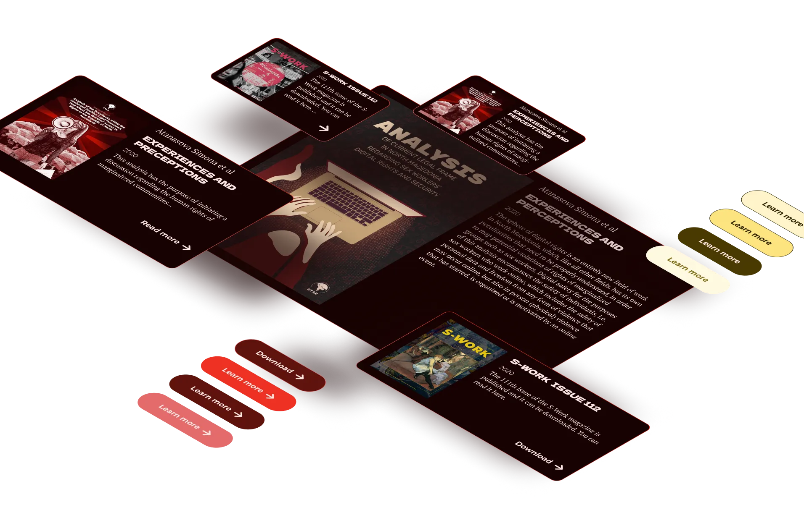
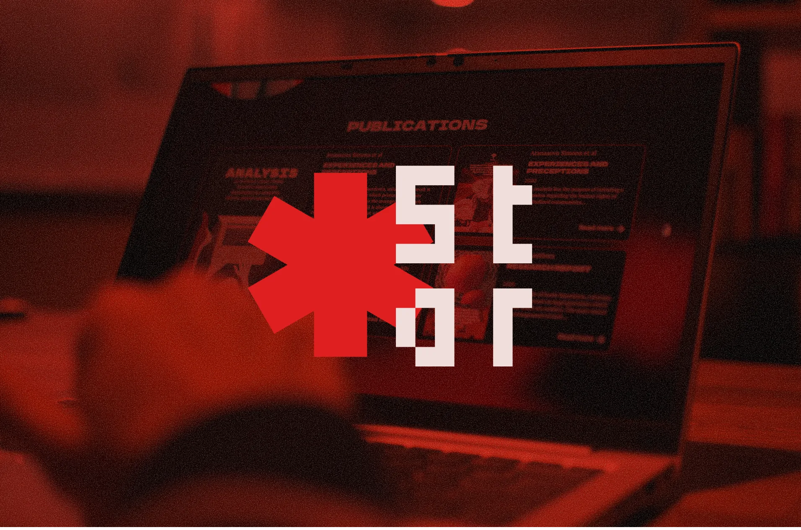

STAR, a sex workers non-profit, needed a new website to reflect their evolving work in field of human and labor rights of one of the most marginalised groups in society. I like this kind of work, since they are a real chance to understand the social reality of different groups of people and their professional lives that are burdened by social stigma.
STAR needed both a platform for their own users who come from different socio-economic backgrounds, and a site to show donors they are a credible partner. I wanted to know how I can help as a designer to create a better safer space. I decided the best manner to create insights was to gather qualitative data from the sex workers themselves to gain understanding rather than have a condescending posture driven by stereotypes.
Through close communication, we created an interface that is quiet, with dark colours. Contrast was intentional, not decorative. Nothing flashed, nothing demanded to be seen. The design reduced glare, preserved night vision, and minimised the chance of being noticed by someone standing too close—reflecting the everyday working lives of the users.

